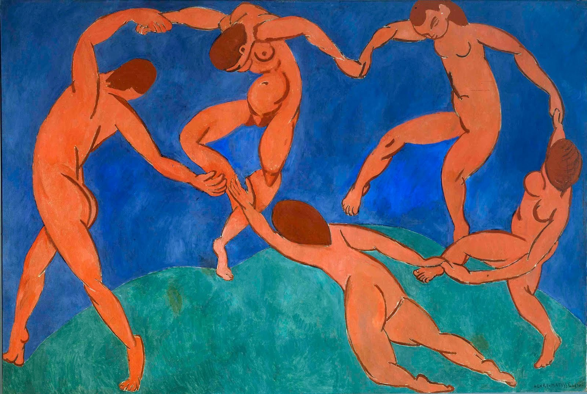
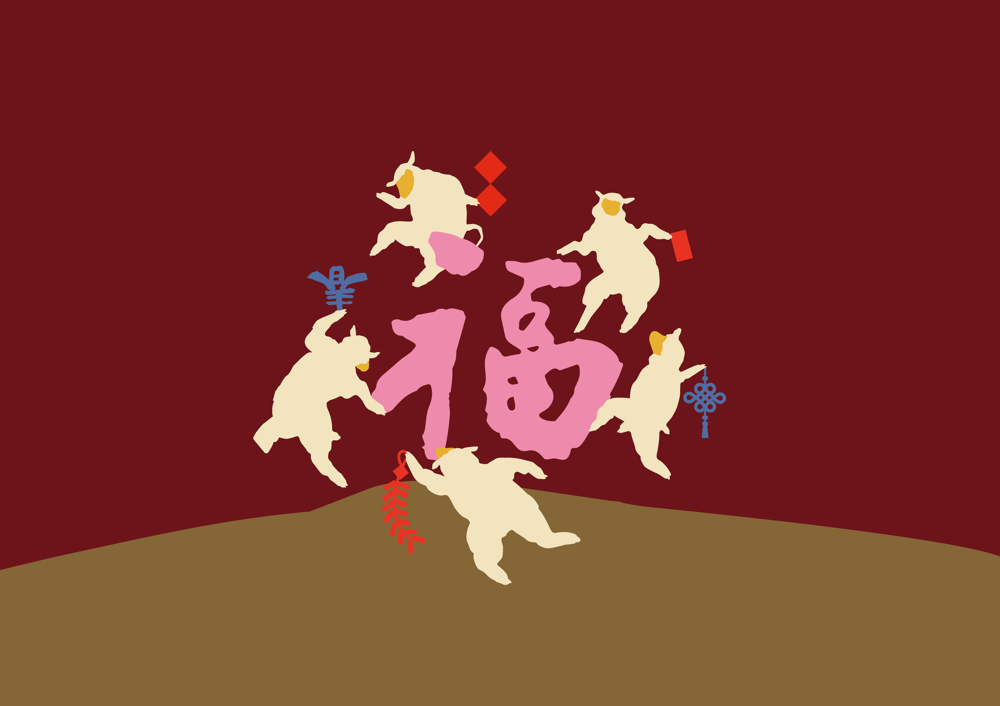

春聯砂畫材料包・羊群報福（進階款）
進階款
2026
撕開、倒沙、鋪色，
簡單技法，拼貼出陪伴一年的春聯。
尚有現貨
款式
$__
目前選擇：尚未選擇

馬諦斯《舞蹈》
亨利・馬諦斯（Henri Matisse，1869–1954）
法國畫家，野獸派創始人之一，與畢卡索並列二十世紀最具影響力的藝術家。
他一生追求用最簡單的線條與最鮮明的色彩，表達最純粹的情感。晚年因病無法站立作畫，轉而用剪紙拼貼創作，依然充滿生命力。
《舞蹈》（La Danse），1910年
馬諦斯最具代表性的作品之一，畫面中五個人物手牽手圍成一圈，以橘紅、寶藍、翠綠三色，畫出了舞蹈最原始的歡快與自由。
現藏地：俄羅斯聖彼得堡艾米塔吉博物館 State Hermitage Museum, St. Petersburg
畫室原創特色
羊諦斯之舞

羊化再創作致敬馬諦斯《舞蹈》
1910年，馬諦斯畫下五個手牽手跳舞的人，用最簡單的橘紅、寶藍、翠綠，畫出最純粹的歡快與生命力。
我們把跳舞的人換成生肖中的羊，圍成一圈的動態依然還在，只是結合了年節的福到。
商品詳細
- 砂畫底板〔20×20cm〕... 1張
- 集沙盤 ... 1個
- 排刷 ... 1支
- 夾子 ... 1支
- 一次性防污桌布 ... 1張
- 簡易步驟圖
- 教學影片（掃描 QR Code 觀看）
紅款・色沙材料
- 絨毛砂〔3色：酒紅、白、金棕〕... 每色1罐
- 細砂〔4色：麥芽、粉紅、紅、潮藍〕... 每色1管
- 碎金箔〔1色：金〕... 1罐
藍款・色沙材料
- 絨毛砂〔4色：湖藍、深橙、淺橙、綠〕... 每色1罐
- 細砂〔2色：紅、珊瑚紅〕... 每色1管
- 亮粉〔1色：香檳銀〕... 1管
- 碎金箔〔1色：銀〕... 1罐
顏色細節
紅款
藍款
顏色比較
紅款
因應過年配色
如果馬諦斯畫的是舞蹈，那我們過的是年節。把寶藍換成喜氣的酒紅，金棕的山丘、粉紅的「福」字，讓這份野獸派的構圖，多了一份年節的福氣。
藍款
致敬原畫配色
藍、橘、綠，馬諦斯用這三種顏色畫下了最經典的一幕。我們保留了這份野獸派的大膽用色，用絨毛、亮粉、金箔堆疊出更豐富的層次，讓百年前的色彩語言，落在這張春聯上。
商品介紹
不只是細砂。
比起基礎款的細砂，這一款加入了絨毛砂與碎金箔（藍款另有亮粉），操作上多一些層次與變化，適合已經試過砂畫、想挑戰更豐富材質效果的你。
適合對象：想挑戰更多材質層次的你・親子共作・送禮
掛上牆，或貼上門。
完成後，若想固定於牆面或門上，建議自行搭配無痕黏土或膠條使用。
規格資訊
商品：春聯砂畫材料包・羊群報福（進階款）
成品尺寸：20×20cm
顏色數：8色（紅、藍兩款式顏色組合不同，詳見「商品詳細」材料清單）
請注意
- 幼童使用時請大人隨旁陪伴使用。
- 材料包含細小顆粒，吞嚥會有嗆入或誤食風險。
- 碎金箔與亮粉顆粒細緻，操作時請避免風扇、空調直吹，以免材料飛散。
- 沙料若沾染衣物或家具，建議盡快輕拍清除，避免顆粒卡入纖維縫隙。
- 操作時建議鋪好桌布，避免沙料灑落。
- 請將材料存放在幼兒與寵物無法取得之處。